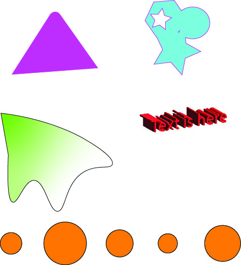
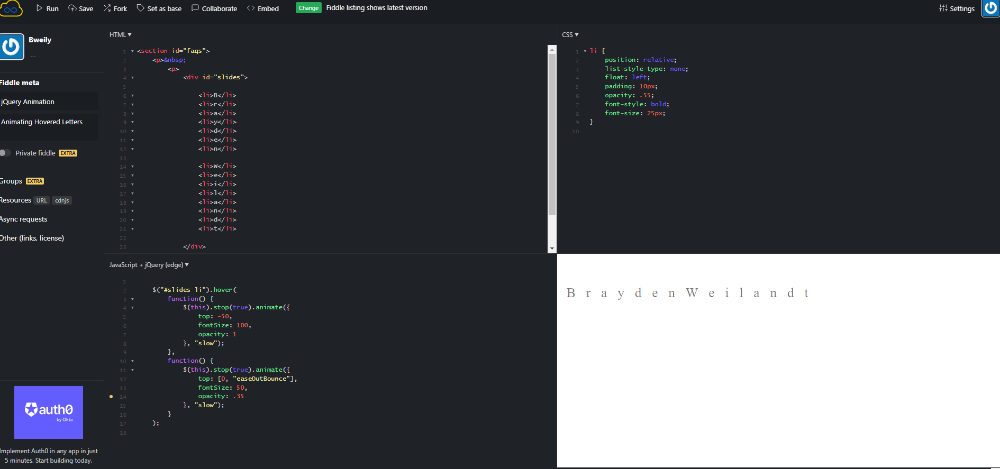
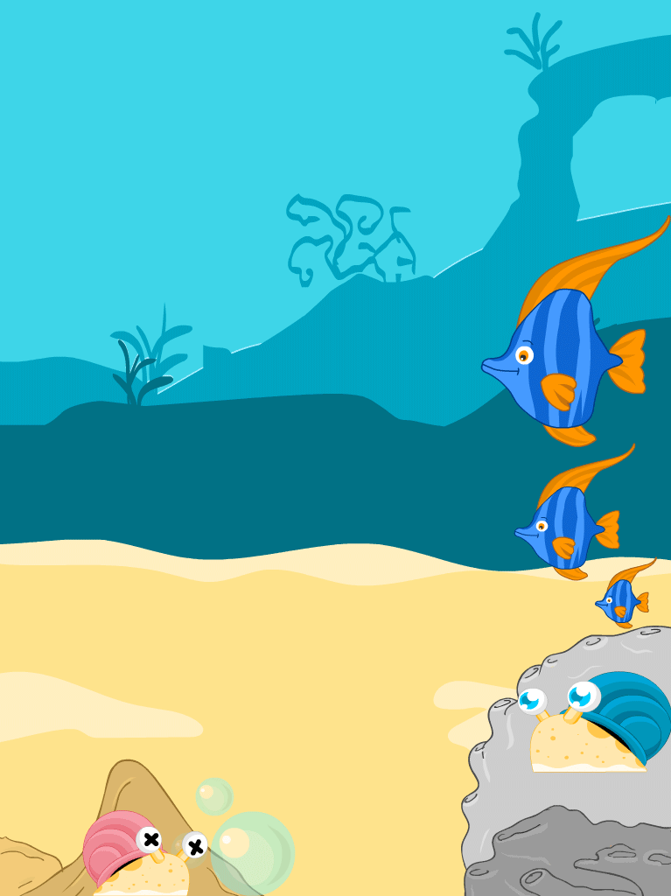

I used photoshop here to take out all the ugly backround trees that the focus stays on us.
I used Illustrator in this photo as a learning tool to understand how the software works, by making different shapes different ways.

I used JsFiddle here to make a jQuery animation so that when you hover over each letter of my name they change size.

I used Animate here to create a underwater backround with some fish swimming left while 2 snails are crawling in opposite directions.
(Cant figure out why the gif keeps dissapearing and reappearing.)
